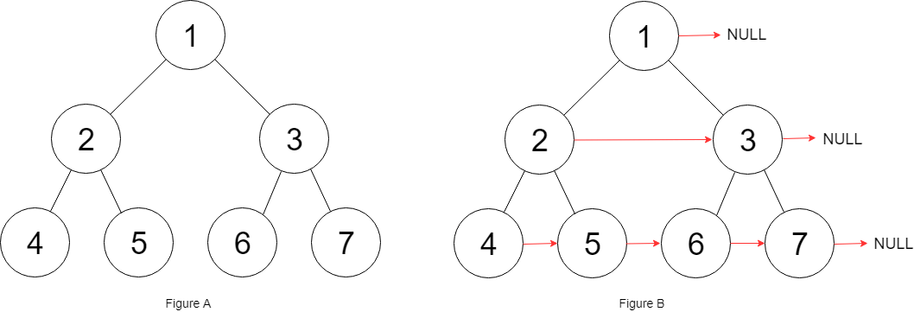
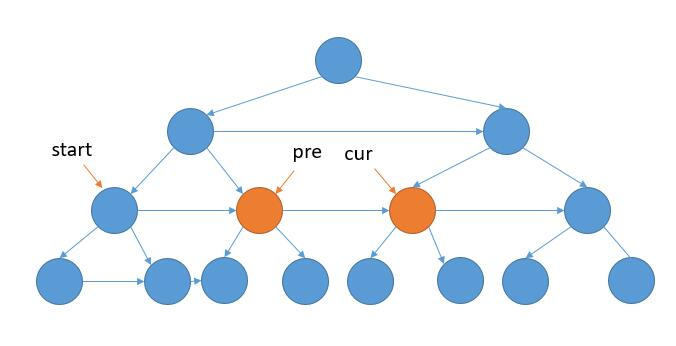
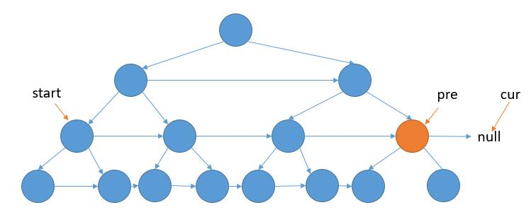

You are given a perfect binary tree where all leaves are on the same level, and every parent has two children. The binary tree has the following definition:
struct Node {
int val;
Node left;
Node right;
Node *next;
}Populate each next pointer to point to its next right node. If there is no next right node, the next pointer should be set to NULL.
Initially, all next pointers are set to NULL.
Follow up:
-
You may only use constant extra space.
-
Recursive approach is fine, you may assume implicit stack space does not count as extra space for this problem.
Example 1:

Input: root = [1,2,3,4,5,6,7] Output: [1,,2,3,,4,5,6,7,] Explanation: Given the above perfect binary tree (Figure A), your function should populate each next pointer to point to its next right node, just like in Figure B. The serialized output is in level order as connected by the next pointers, with '' signifying the end of each level.
Constraints:
-
The number of nodes in the given tree is less than
4096. -
-1000 ⇐ node.val ⇐ 1000
解题分析


这道题的关键是在上层遍历中，把下层的链接关系建立起来。
因为是完全二叉树。所以，如果左下节点为空则到达最后一层；向右节点为空，则到达行尾需要换行。
参考资料
1
2
3
4
5
6
7
8
9
10
11
12
13
14
15
16
17
18
19
20
21
22
23
24
25
26
27
28
29
30
31
32
33
34
35
36
37
38
39
40
41
42
43
44
45
46
47
48
49
50
51
52
53
54
55
56
57
58
59
60
61
62
63
64
65
66
67
68
69
70
71
72
73
74
75
76
77
78
79
80
81
82
83
84
85
86
87
88
89
90
91
92
93
94
95
96
97
98
99
100
101
102
103
104
105
package com.diguage.algorithm.leetcode;
import java.util.Objects;
/**
* = 116. Populating Next Right Pointers in Each Node
*
* https://leetcode.com/problems/populating-next-right-pointers-in-each-node/[Populating Next Right Pointers in Each Node - LeetCode]
*
* You are given a perfect binary tree where all leaves are on the same level, and every parent has two children. The binary tree has the following definition:
*
* [source,cpp]
* ----
* struct Node {
* int val;
* Node *left;
* Node *right;
* Node *next;
* }
* ----
*
* Populate each next pointer to point to its next right node. If there is no next right node, the next pointer should be set to `NULL`.
*
* Initially, all next pointers are set to `NULL`.
*
* *Follow up:*
*
* * You may only use constant extra space.
* * Recursive approach is fine, you may assume implicit stack space does not count as extra space for this problem.
*
* .Example:
* [source]
* ----
* Input: root = [1,2,3,4,5,6,7]
* Output: [1,#,2,3,#,4,5,6,7,#]
* Explanation: Given the above perfect binary tree (Figure A), your function should populate each next pointer to point to its next right node, just like in Figure B. The serialized output is in level order as connected by the next pointers, with '#' signifying the end of each level.
* ----
*
* *Constraints:*
*
* * The number of nodes in the given tree is less than `4096`.
* * `-1000 <= node.val <= 1000`
*
*
* @author D瓜哥, https://www.diguage.com/
* @since 2020-01-24 23:06
*/
public class _0116_PopulatingNextRightPointersInEachNode {
/**
* Runtime: 1 ms, faster than 47.22% of Java online submissions for Populating Next Right Pointers in Each Node.
*
* Memory Usage: 48.3 MB, less than 6.35% of Java online submissions for Populating Next Right Pointers in Each Node.
*
* Copy from: https://leetcode-cn.com/problems/populating-next-right-pointers-in-each-node/solution/xiang-xi-tong-su-de-si-lu-fen-xi-duo-jie-fa-by--27/[详细通俗的思路分析，多解法 - 填充每个节点的下一个右侧节点指针 - 力扣（LeetCode）]
*/
public Node connect(Node root) {
if (Objects.isNull(root)) {
return root;
}
Node start = root;
Node previous = root;
Node current = null;
while (Objects.nonNull(previous.left)) {
if (Objects.isNull(current)) {
previous.left.next = previous.right;
previous = start.left;
current = start.right;
start = previous;
} else {
previous.left.next = previous.right;
previous.right.next = current.left;
previous = previous.next;
current = current.next;
}
}
return root;
}
public static void main(String[] args) {
}
public static class Node {
public int val;
public Node left;
public Node right;
public Node next;
public Node() {
}
public Node(int _val) {
val = _val;
}
public Node(int _val, Node _left, Node _right, Node _next) {
val = _val;
left = _left;
right = _right;
next = _next;
}
}
}